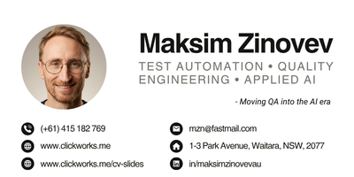

Maksim Zinovev
Test Automation Engineer, moving QA into the AI era
Waitara NSW 2077 • mzn@fastmail.com • 0415 182 769
LinkedIn • GitHub • clickworks.me
How this deck was made
One Quarkdown .qd source, compiled to interactive slides: fragments reveal step by step, the timeline is a live Mermaid diagram, the stat tiles are a 6-line custom function.
At a glance
7 yrs
in QA and test automation, 2019 to 2026
4 companies
from startup to global SaaS to #1 in ANZ smart metering
3 frameworks
IWS (Python), SmartCore (TypeScript), IMDM (Java) at Intellihub
50+
Playwright scenarios built from scratch at Figtree
5 Copilot Skills
shared and used by colleagues in daily work
8 sessions
monthly AI knowledge-sharing; teammates now present their own techniques
Career path
%%{init: {"theme":"dark", "themeCSS": "rect.task { fill: #3b6e8f !important; stroke: #5a93b5 !important; }", "gantt": {"fontSize": 18, "sectionFontSize": 20, "barHeight": 36}}}%%
gantt
title 2019 to 2026, all roles Sydney-based
dateFormat YYYY-MM
axisFormat %Y
section Testing career
Aerofiler, part-time tester :2019-08, 2021-09
WYWM, QA Test Analyst :2021-11, 2023-04
WYWM, Software QA Engineer :2023-04, 2023-07
Figtree Systems, Test Automation :2023-11, 2025-07
Intellihub, Automation Engineer :2025-08, 2026-09Intellihub, 08/2025 – 09/2026
The #1 smart-meter provider in ANZ: meter data for 40+ electricity retailers, 99.5% delivered reliably. BDD test automation across IWS (Python), SmartCore (TypeScript on Azure and D365) and IMDM (Java), plus code review across all three frameworks.
First BDD scenarios in the daily CI pipeline
Scenarios used to run on demand. Now the team gets constant daily feedback.
Automated monitoring for prod and test environments
Jenkins pipelines, Python checks, email alerts and build badges.
Failure-cause analysis tool
Analyses daily automation results, classifies likely causes, suggests fixes. Human review before anything is acted on.
AI enablement across the team
5 shared GitHub Copilot Skills
Covering IWS domain knowledge, task creation and AI skill best practices. Teammates use them daily.
AI-powered PR review agent
Structured verdict, summary and suggestions per review. Estimated 5 to 10% time saved per review.
copilot-instructions.md (Agents.md)
Gives AI agents a repo map at session start, in both frameworks.
Monthly knowledge-sharing sessions
8 sessions so far; other team members now present their own techniques.
Figtree Systems, 11/2023 – 07/2025
Versatile 40/20/40 split: test automation, QA, manual testing.
Playwright UI suite, from scratch
50+ automated scenarios, saving 4 to 6 hours of manual work per regression run.
QA process maturity
Led workshops on exploratory testing and RCA guides, standardised defect reporting, rewrote acceptance criteria.
AI initiative
Secured leadership approval for privacy-aware AI open-source tooling: research, evaluation, risks and mitigations.
Building in the open
groundcrew, TypeScript
CI monitoring bot: GitHub Actions results become plain-language failure summaries in Telegram. Built with Ax (DSPy), GitHub Actions, Telegram API, Cloudflare Browser.
Docfence, Python
CLI that validates markdown spec docs against rules embedded in the document: catches TODOs, broken links and missing sections that AI assistants introduce.
compass-skills
AI agent skills guiding testers, QA engineers and product managers through domain mapping, BDD scenario building and system modelling.
Toolkit snapshot
Test automation


Web UI, REST API, BDD; Playwright/TypeScript, pytest, TestComplete, Postman, DBeaver; Jenkins, Azure DevOps, GitLab.
AI practice

GitHub Copilot: Skills development, copilot-instructions.md, PR review agent. ChatGPT, Claude, Google AI Studio, Cline.
Languages and data


TypeScript, Python, JavaScript; SQL; HTML and CSS basics. Azure, GitLab, GitHub.
Credentials
- ISTQB Foundation Level (2019)
- AZ-900, Microsoft Azure Fundamentals (2023)
- Continuous Testing with Azure DevOps; Introduction to Playwright with TypeScript (2023)
- Rapid Software Testing Explored (2021)
- Postman Fundamentals, Source Control for Test Automation with Git (2023)
Education
Bachelor of Engineering in Electrical Engineering, Omsk State Technical University.
Australian citizenship.
Let’s talk
Waitara NSW 2077, Sydney
mzn@fastmail.com • 0415 182 769
linkedin.com/in/maksimzinovevau • github.com/MaksimZinovev • clickworks.me

this deck is one
.qdfile. Same source can compile to PDF, a paged document or a docs site with search.